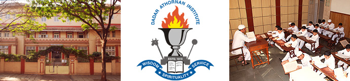
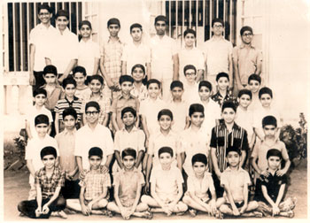

|
|
|
 |
|
|
| |
|
| |
History
of DADAR ATHORNAN INSTITUTE, Mumbai
(Previously THE ATHORNAN BOARDING MADRESSA,
DADAR) |
| |
The
Dadar Athornan Institute was established
as a charitable Institute by the Athornan
Mandal, an association of priests,
on 9th November 1919. Its main aim
was to give the children of Parsi
priests, especially those residing
in mofussil areas, an opportunity
to gain systematic scriptural, ritual,
religious and secular education, along
with boarding, lodging, and allied
facilities like medicines, books and
stationery absolutely free of costs.
This Institute started with 10 students
under Principal Ervad Barjorji Erachji
Bajan at the bungalow donated by Mr.
Bomanji Hormasji General at Golanji
Hill, Parel. |
 |
|
| |
Later
a need for a larger premise was felt, and
a one storeyed building was constructed
in Dadar Parsi Colony through the largesse
of Bai Dhunbaiji Pestonji Hakimji, where
the Institute was shifted in 1924. A couple
of years later a second floor was added
by the Athornan Mandal, at a cost of around
fifty thousand Rupees.
In 1990 an Annexe Building consisting of
a ground and three floors was constructed
adjoining the existing Institute building,
which houses the Mancherji Joshi Hall, a
Library with a collection of books on Indo-Iranian
and Zoroastrian subjects, a Medicare centre
and a residential staff quarters.
Till 1965, secular education was imparted
by in-house teachers, within the Institute
premises. From 1966, the Institute students
went to the nearby Dadar Parsi Youths Assembly
(D.P.YA.) High School to get secular education
upto S.S.C. level. Till date this school
gives completely free education to all Institute
students.
The Institute was closed down on 20th April
1965 due to lack of funds. It restarted
on 20th June 1966, after a year, under a
new management, with Ervad Rustomji N. Panthaki
as the Principal, who with his noble wife
Jalamai guided the Institute for almost
30 years and nurtured it to a respectable
position in the international Zoroastrian
community. Rustomji’s tryst with the
Institute started in 1928 as a student and
lasted for almost 70 years in various capacities
as a student, teacher and finally as its
most successful Principal. It was due to
his vision and insight that the Institute
Annexe building came up in 1990. After him,
the author, himself an alumnus of the Institute
(1974-1980), took over as the Principal.
Since 1973, college-students were allowed
to continue at the Institute. Initially
it was mandatory for them to take up the
Arts stream and study Avesta-Pahlavi as
their main subject. However, since 2005,
they are allowed to take up education in
any stream they desire and learn Avesta
as an additional language. The college students
are given free boarding and lodging and
are also given college and tuition fees.
They perform certain residential duties
and serve as assistant teachers.
|
| |
| 1. |
Golden
Jubilee…., 1971, p.1 |
| 2. |
Parsi
Prakash, Vol. V, p.463 |
| 3. |
Golden
Jubilee…., 1971, p.6 |
| 4. |
Golden
Jubilee…., 1971, p.7 |
| 5. |
Platinum
Jubilee…,1994, p.34 |
|
| |
Ervad
Barjorji Bajan (1919-1926) was the first
Principal of the Institute. He was a competent
Athornan, who not only had the command over
scriptural recital and performance of rituals,
he was also well versed in Zoroastrian religion,
Iranian history and Iranian languages. He
was also an author of several religious
books in Gujarati. He served for eight years.
After him, Dinshaji Navroji Minocher-Homji,
Ervad (later Dastur) Faramroz Areshir Bode
and Ervad Jamshedji Cawasji Katrak served
as Principals.
Ervad Edalji Faramji Madan was appointed
teacher of Avesta recital, religious knowledge,
Iranian history, Avesta and Pahlavi in 1927.
Initially he was reluctant to take up the
responsibilities of a Principal, as he was
visually handicapped. However, from 1934
he became the Principal and served till
his demise in 1947. He was an author of
religious, Iranian history and scriptural
books in Gujarati.
After Ervad Madan’s demise, Mr. Gustadji
Bachaji Kotwal, Mr, Hirjibhai Cawasji Driver
and Mr. Jamshedji Kharshedji Elavia served
till 1965, when the Institute closed down
for a period of one year. Mr. Elavia rejoined
in 1966 and served as a teacher of secular
subjects till 1975.
Ervad Cawas Peshotan Anklesaria was an instructor
for priestly studies for about 20 years,
till his demise in 1969. A stern but diligent
teacher, his students adorn the priestly
scene of the Community today.
Ervad Bejonji Fardunji Kanga served from
1929 to –1953. He taught scriptures
as well as religion to junior students.
He had a good hold over Iranian languages
as well as over Mathematics. He was a good
scribe, and used to maintain books and records
of the Institute.
Other teachers for scriptures include Ervad
Pallonji Pirojsha Antia, Ervad Minocheher
Rustamji Unwalla, Ervad Erachsha Edalji
Karkaria, Ervad Firoze Ratansha Patel, Ervad
Hormasji Ratanji Jinia, Ervad Keki Meherwanji
Dastur, Ervad Burjorji Ratanji Panthaki
and Ervad Hoshang Erachsha Mirza, Ervad
Darabsha Bomanji Sidhwa, Ervad Sam Behrmsha
Sidhwa.
From 1979 students of the Institute studied
Avesta language and appeared in the S.S.C.
with Avesta as the second language. Since
1998, on account of change of policy in
language studies by the Education Board,
this practice has been discontinued. Presently
college students of the Institute study
the Avesta language as a special subject.
|
| |
| 6. |
Golden
Jubilee…., 1971, p.3 |
| 7. |
Golden
Jubilee…., 1971, p.4 |
| 8. |
Golden
Jubilee…., 1971, p.5 |
| 9. |
Golden
Jubilee…., 1971, p.5 |
|
| |
There
was a big difference in the way education
was imparted in this Institute before it
closed down in 1965, and after it re-opened.
Prior to the closure, students did not attend
a High School. Admissions were taken every
alternate year. The students stayed at the
Institute for a period of six years and
basic secular education was imparted along
with religious and scriptural training inside
the Institute. There were three groups of
students and hence only three classes. Education
was imparted at three levels. There were
an average of about 30 students, thus about
10 students in each group.
In the early days of the Institute, the
students woke up at 5:30 a.m. and till noon
learnt by rote religious scriptures, along
with recital and performance of accompanying
rituals. After mid-day secular education
was imparted, in which basic knowledge of
English, Gujarati, Urdu, Avesta, Pahlavi
and Persian languages was given. Religious
knowledge (Guj. dharmagnan)
and Iranian history (Guj. tavarikh)
was also an integral part of the curriculum.
Secular subjects like Mathematics, Geography
and History were also taught. Games and
physical culture were also part of the curriculum.
Students who passed out from here during
this old system, generally used to go to
the M.F.Cama Athornan Institute, even though
they would have completed their priesthood
training over here and qualified as full
fledged priests. This was done, so that
they could complete their Matriculation,
as the facility for High School education
was not available then at the Dadar Institute.
Education - The new system
Since 1966, when the Institute re-opened
under Principal Rustomji N. Panthaki, the
study schedule of the Institute changed
drastically. Students used to go to the
Dadar Parsee Youths Assembly High School
for academic education. Till April 1975,
the school worked in one shift from 9:00
a.m to 3:00 p.m. From June 1975 the school
functioned in two shifts – 7:30 a.m.
to 12:50 p.m. for Std. VIII-X and from 1:00
pm to 6:00 p.m. for Std. I–VII.
Apart from going to the DPYA High School
for their academic studies, students are
given private group tuitions and coaching
at the Institute. Primary school students
are coached by in-house teachers. External
tutors are recruited to coach senior students
in specialized subjects like Hindi, Marathi,
Science and Maths.
Method of scriptural training
Admissions are given to children of priestly
class from Std I to III, either before or
after their Navjot.
The Khordeh Avesta is taught in the Gujarati
script and later the Yasna is taught in
the Avestan script. The student is first
assisted to read a passages of prayers,
about 4 to 5 lines, word by word. Then the
student memorises the passage. After that,
the teacher takes up the passage, ensuring
that the paragraphs learnt previously are
not forgotten.
Regular revision of prayers previously learnt
is necessary and forms and integral part
of the scriptural study schedule, as texts
not revised are easily forgotten within
a few months.
The scriptural training is spread over a
period of seven years. The main part of
the training includes learning by heart
the scriptural texts, which include parts
of the Khordeh Avesta, the 72 chapters of
the Yasna and the 23 chapters of the Visperad.
A student praying for about three hours
a day for nine months (three months are
for vacations) generally requires about
5 years to complete the above memorization.
The later two years are for the preparation
of Maratab, the higher priesthood
initiation.
The seven year scriptural training is spread
as follows. The first, and the first half
of the second year the student starts with
learning the Khordeh Avesta in the Gujarati
script., in which they learn the following
prayers by heart: Kasti prayers, Din-no-Kalmo,
Jamvani Baj, 101 names of God, 30 roz, 12
mah, Hamkaras, Geh, Gahambars, Gathas, Sarosh
Baj, Tandarosti, Hoshbam, 5 Geh, Patet Pashemani,
5 Nyaishnas, Vispa Humata, Nam Setayashne,
4 Dishano Namaskar. Stum no Kardo, Sarosh
Yasht Vadi, Sarosh Yasht Hadokht, Nani Hom
Yasht, Vanant Yasht, Siroza Yasht, Hormazd
Yasht & Ardibahesht Yasht.
In the later half of the second year, the
student is first taught to read the Avestan
script and then the learning of the Yasna
starts, which is completed till Yasna Ha
(chapter) 10 by the end of the second year.
In the third year Yasna Ha 11- 34, in the
fourth Year, Yasna Ha 35 –53, and
in the fifth year the entire Yasna (till
Ha 72); Visparad, supplementary texts, (Bajdharna
of Yasna and Visparad); Dron Yasht, Afringans
and various Baj (Baj before going to toilet,
before meals, before bath etc.) are then
taught.
In the sixth year prayers required for daily
priestly rituals like Afringans (Ardafravash,
Gatha, Gahambar, Daham, Sarosh etc.) and
Afrins (Ardafravash, Bozorg, Hamkara, Gahambar
etc.) are taught by heart. Reading and ritual
of Farokhshi, Performance of Jashan, Afringan,
and after death rituals are also taught.
In the second half of the sixth year, fluent
reading of Vendidad Fragard I – XII
is done. In the seventh year the reading
of the rest of the Vendidad (Fragard XIII
–XXII) and its allied prayers are
taught. The student is ready for Maratab
by the end of the seventh year.
Every year an external examiner, who is
a priest of a high calibre, takes exam of
scriptural recital and rituals, after which
he gives his report as to the standard of
training. Generally an external examiner
continues for a period of four to five years
to assess the progress and give guidance
on a longer term.
Weekly classes are held to teach religious
knowledge which includes basic teachings
of the religions, meanings of basic prayers,
ethics and rituals. Iranian history covers
the information of the five Iranian dynasty
and the history of the Zoroastrian s in
Iran and India during the last millennia,
which includes biography of eminent Zoroastrians.
Since its inception, more than 500 students
have studied at this Institute. Its alumni
include Dasturji Dr. Hormazdyar K. Mirza,
Dasturji Kaikobad P. Dastur, Dasturji Khurshed
K. Dastur, Dasturji Meherji K. Mehrji Rana,
Dasturji Nadirshah P.Unwala, Ervad Rustomji
N. Panthaki, Ervad Ratansha R. Motafram
and Ervad Parvez M. Bajan.
The Institute has had students from all
over India, especially from Broach, Ankleshwar,
Baroda, Billimora, Nargol, Udwada, Surat,
Navsari, Bulsar, Tarapor, Ahmedabad, Saurashtra,
Indore, Raipur, Hyderabad, Mumbai, and Poona.
The Golden Jubilee of the Institute was
celebrated in 1971 and its Platinum Jubilee
in 1994. At both times a souvenir was brought
out, covering a brief history of the Institute
till that time. On the occasion of the Platinum
Jubilee a grand Programme was held and a
special First Day Cover was released by
the Department of Indian Post to commemorate
this event.
|
|
|
|
|
|
|
|